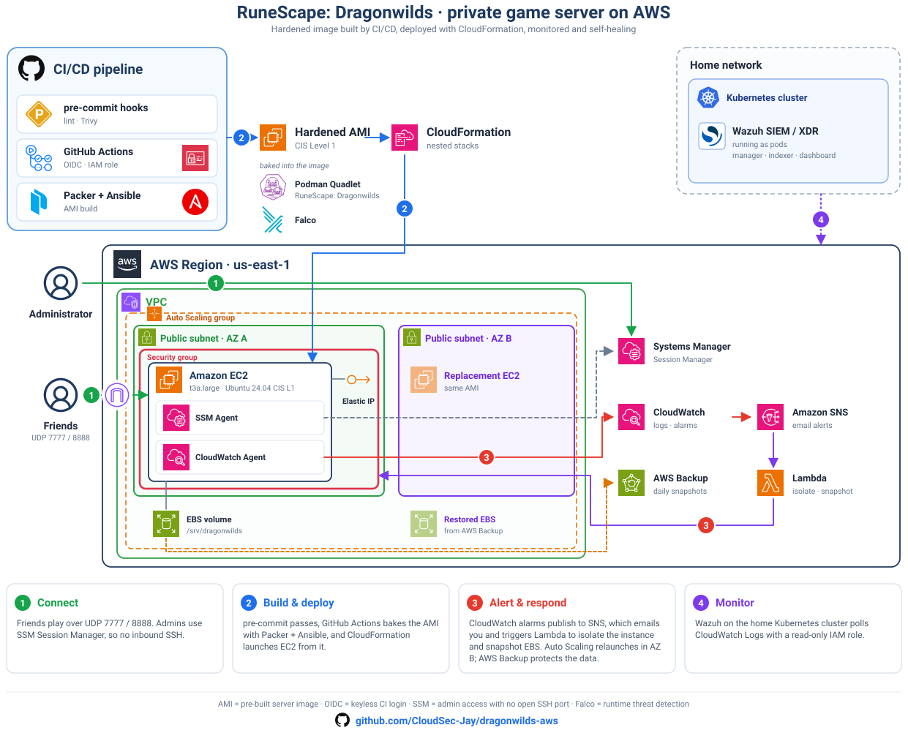

Infrastructure & security case study
Dragonwilds on AWS
I built a dedicated game server as a small production environment: immutable images, retained state, SSM-only administration, runtime detection, and an auditable deployment path.
- Platform
- AWS · Ubuntu 24.04
- Compute
- EC2 · Podman
- Provisioning
- CloudFormation
- Image pipeline
- Packer · Ansible
- Status
- Running
The brief
The workload is simple—a single Dragonwilds server—but it has the same operational concerns as a larger service. The host needs patching, the game needs predictable restarts, player data must survive replacement, and security events need somewhere to go.
My goal was to make the instance replaceable without making the world disposable. The result separates compute from data and makes infrastructure changes through a reviewed pipeline instead of one-off changes on the server.
01
Architecture

CloudFormation creates the network, instance profile, EC2 host, encrypted data volume, backups, log groups, dashboard, and alarms. The host runs the game through a system Podman Quadlet. Only UDP 7777 and 8888 are exposed; TCP 22 is not open.
World data lives on a retained gp3 EBS volume mounted at
/srv/dragonwilds. That choice lets me replace the instance or AMI
without coupling the lifetime of the server process to the lifetime of the save.
02
Decisions and tradeoffs
No inbound SSH
Administration goes through SSM Session Manager. This removes a public management port and gives AWS-native session attribution.
Tradeoff: access depends on the SSM agent, instance role, and outbound AWS connectivity.
Immutable host, persistent world
Packer and Ansible build the host configuration. The world save stays on a separate retained EBS volume.
Tradeoff: instance replacement requires careful volume detachment and attachment sequencing.
Falco instead of AIDE
Falco monitors process, file, identity, and network behavior with modern eBPF. AIDE is removed from the final image.
Tradeoff: this favors live behavioral detection and reproducible images over a traditional on-host file database.
Exceptions are explicit
CIS settings are adjusted where Podman networking, Falco, SSM, or CloudWatch require different behavior.
Tradeoff: the benchmark score is lower, but the remaining differences are visible and tied to workload requirements.
03
Security controls
Live Ubuntu CIS Level 1 audit
87.11%500 passed · 74 failed · 17 skipped
574 evaluated checks · run through SSM on 2026-10-08On the instance
- IMDSv2 is required with a hop limit of one.
- UFW denies inbound traffic except the two UDP game ports.
- Falco adds 15 workload-specific rules to its maintained baseline.
- Secrets are fetched at boot and written to ephemeral runtime storage.
- CloudWatch receives host health, process metrics, system logs, and Falco events.
At the AWS account level
- AWS Config continuously records supported resources.
- Security Hub CSPM evaluates CIS AWS Foundations Benchmark v5.
- GuardDuty foundational and S3 protection are enabled.
- Wazuh runs inside the home network as the external SIEM/XDR destination.
04
Build and deployment
GitHub Actions starts with the same pre-commit checks I run locally, then selects a build path from the files that changed. This keeps a CloudFormation-only edit from triggering an unnecessary AMI bake.
- 1
Validate
ShellCheck, yamllint, cfn-lint, ansible-lint, Packer validation, unit tests, and Trivy.
- 2
Choose a path
Full master bake, fast runtime update, or infrastructure-only deployment.
- 3
Build the image
Packer invokes Ansible to configure runtime services and apply CIS hardening.
- 4
Deploy and observe
Nested CloudFormation stacks update the workload; health metrics and alarms confirm operation.
05
What I verify
Bootstrap completion, mounted world volume, running Quadlet, and UDP listener health.
Falco service health, local JSON output, and delivery to the CloudWatch log stream.
AWS Config recorder status, enabled Security Hub standards, and GuardDuty detector features.
Retained EBS behavior, AWS Backup coverage, clean shutdown, and controlled S3 save import.
06
Current state and next work
The workload is running, but I do not treat the current score as a finish line. The 74 failed CIS checks still need classification as remediations or documented exceptions. AWS Config, Security Hub, and GuardDuty were enabled in the console and are not yet represented in this repository's CloudFormation templates.
The next useful improvement is to bring those account-level controls under code, then attach sanitized evidence to each remediation without committing raw findings, account identifiers, addresses, or scanner exports.